Produção audiovisual, drone e design para empresas, marcas e eventos que entenderam que imagem amadora custa mais caro do que produção profissional.
A Lume Studio nasceu pra fugir do audiovisual genérico.
Unimos filmagem, drone, fotografia e design num único estúdio, com direção criativa e estética cinematográfica — para transformar ideias e momentos em conteúdo que realmente comunica.
Atendemos empresas, construtoras, imobiliárias, profissionais liberais e marcas que querem se posicionar com uma imagem à altura do que entregam.
Ver portfólioImagem profissional muda a forma como o mercado te enxerga — a conversa de venda já começa com respeito.
Quando a apresentação é boa, quem se apresenta bem paga bem. Vídeo amador atrai quem pede desconto.
Um vídeo de apresentação bem feito vende por você em reunião, licitação, feira ou rede social. É fica ativo mesmo sem você.
Acabou a correria atrás de "alguém que grava" e o sumiço das redes por falta de material.
Produção completa, do roteiro à entrega final: filmagem, drone, fotografia e design trabalhando juntos.
O vídeo que apresenta sua empresa, ou você, como merece ser visto. Perfeito para site, reuniões comerciais e licitações. Feito para durar anos no ar.
Vídeos gravados e editados no formato certo de cada rede, prontos para publicar. A solução para quem quer presença constante sem montar equipe interna.
Palestras, bastidores e o teaser do evento, tudo captado sem atrapalhar a programação. Seu evento continua rendendo depois que acaba.
Imagens que comunicam a qualidade do seu produto, ambiente ou equipe — para site, catálogo e redes sociais.
Captação aérea profissional para imóveis, eventos e obras. Ângulos que só o drone entrega, com equipamento e piloto próprios.
Peças gráficas e identidade visual pensadas junto com o audiovisual, pra sua marca falar a mesma língua em qualquer formato.
Cada item abaixo existe porque é exatamente onde o audiovisual genérico falha.
Agilidade e qualidade sem abrir mão do prazo — cada entrega combinada com antecedência, pra você organizar sua agenda.
Câmera, drone, iluminação e áudio profissionais. Você não precisa alugar nada.
Não é só gravar — é pensar a narrativa da sua marca do começo ao fim.
Entendemos o objetivo de cada projeto antes de gravar qualquer coisa.
Escopo e valor definidos por escrito. Sem surpresa na entrega.
Sim. Temos equipamento próprio de drone e piloto habilitado para captação aérea em vídeos e fotos.
Gravação e edição completas, incluindo correção de cor e finalização — sem precisar contratar outro fornecedor.
Sim, produzimos tanto vídeos institucionais quanto conteúdo pensado especificamente para redes sociais.
Sim, fazemos cobertura de eventos corporativos e sociais, incluindo casamentos.
Sempre. Cada projeto tem escopo, prazo e valor definidos por escrito antes de começar.
Varia com a complexidade do projeto — combinamos o prazo com você antes da gravação e ele entra no contrato.
Atendemos principalmente BH e região metropolitana, mas avaliamos projetos em outras cidades de Minas Gerais.
Sim, os serviços podem ser contratados separadamente, de acordo com a necessidade do seu projeto.
Chama a Lume no WhatsApp, conte sua ideia e receba uma proposta com escopo, prazo e valor fechados.
Pedir orçamento



